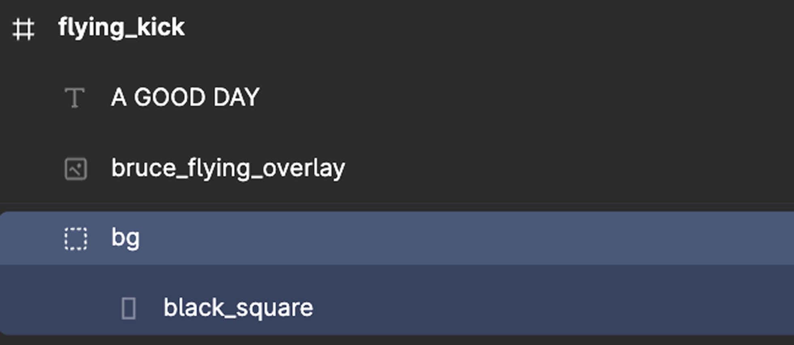
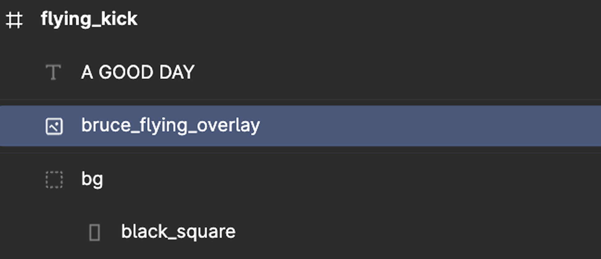
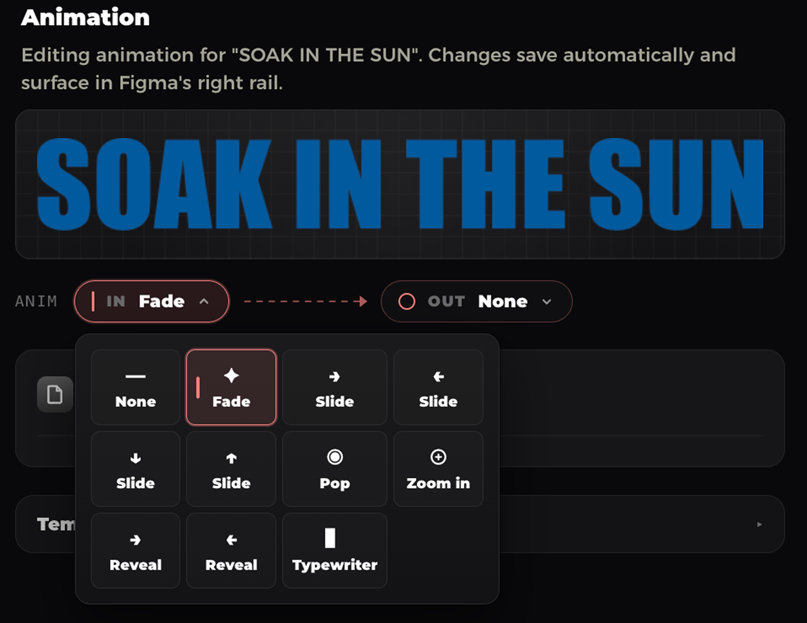
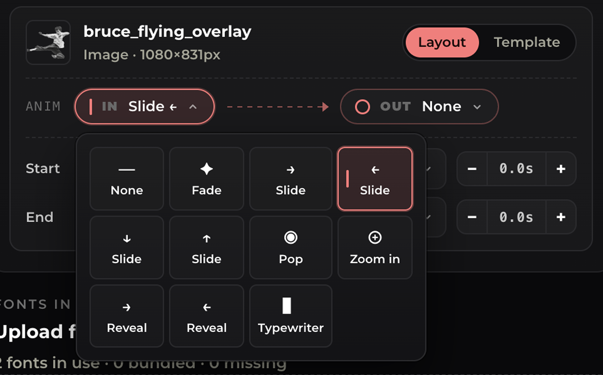

Using the Plugin
From installing Typpo to rendering your first video. Here's the whole flow, step by step. We'll cover getting the plugin, crafting your template in Figma, and running it to turn your design into animated video.
Install the plugin
In Figma, open Plugins → Development → Import plugin from manifest… and choose Typpo's manifest.json. Once imported, it'll be available under Plugins → Development → Typpo Template Export in any file you open.
Craft your template
Before running the plugin, build your template in Figma: the layouts, backgrounds, text, and overlays that define how your video looks. New to how templates work? Start here:
Select your frames & run the plugin
In Figma, select the frame you want to turn into a template, along with any additional background assets you want available. Then run the Typpo plugin from Plugins → Development → Typpo Template Export. It reads everything in your selection.
Download your template
When everything's set, download your template from the plugin. Typpo packages up your layouts, backgrounds, overlays, and animations into a single template, ready to bring into the app.
Drop it into Typpo
Open Typpo and drop in your template. That's it. It's ready to generate video from your transcript, with your text animating word-by-word inside the safe zone.
Good to Know
Group your backgrounds in bg
Anything that should be treated as a background (the images, videos, or colors that sit behind your text) must live inside a group named bg. The plugin imports everything in that group as a background layer and cycles through them.
If it's not in bg, you can end up with unwanted results.

bg group. Text and overlays stay outside it.Keep overlays outside bg
Overlays (logos, decorations, watermarks) are elements that float on top of the background. To be treated as overlays, they must live outside the bg group in your layer structure.
Overlays can be ◆ Layout scope or ◆ Template scope, and can have entrance & exit animations. See What is a Template? for how scope works.


bg group, so the plugin imports it as an overlay that floats above the background.Set the text bounding box
The bounding box of your text layer in Figma is the safe zone: the area Typpo fills with text. It keeps your font size and styling consistent and never shrinks the text to cram a long script in. It's also how you keep words clear of logos, watermarks, and frame edges they shouldn't touch.
So the box controls how much text fits, not how big it looks. If a script runs longer than the safe zone can hold at that size, Typpo keeps what fits and drops the rest (only 6 of 12 words might land). Two things to get right: make the safe zone big enough for your longest line, and curate new scripts knowing they're capped to what fits.
Add animations to text & overlays
Inside the plugin, select any text or overlay and choose how it animates on screen as the video plays. Each layer gets its own animation, so you can mix and match across your layouts.


That's it
Five steps from install to Typpo. With your backgrounds grouped, overlays floating, safe zone set, and animations chosen, your template's ready to generate video, with your transcript animating word-by-word as the audio plays.